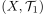
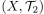
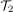
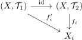

Existenz einer eindeutigen Initialtopologie
1. Satz
Sei  eine Familie topologischer Räume und
eine Familie topologischer Räume und  eine Familie von Abbildungen
Dann existiert eine eindeutige Initialtopologie.
eine Familie von Abbildungen
Dann existiert eine eindeutige Initialtopologie.
2. Beweis
2.1. Existenz
2.2. Eindeutigkeit
Seien ,  topologische Räume, welche die universelle Eigenschaft erfüllen. Wir zeigen anhand der Aussage über die Feinere Topologie und Identitätsabbildung, dass feiner ist als  und aus Symmetrie folgt dann Gleichheit: Es gilt:

Und nach Annahme der Universellen Eigenschaft gilt, dass  stetig ist
stetig ist
Nach Universeller Eigenschaft von  gilt, dass
gilt, dass  stetig ist, da stetig ist.
stetig ist, da stetig ist.